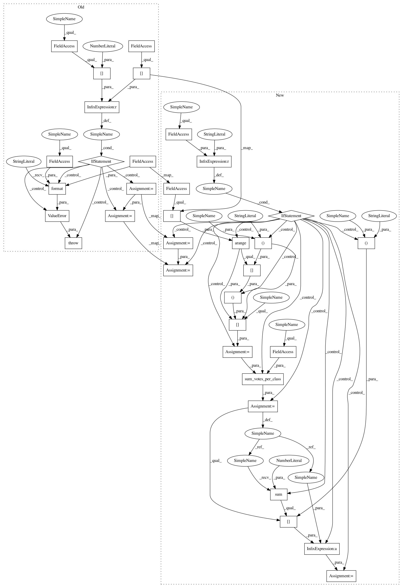

e8d6fd1a77df735a6362003014515d8249617011,deslib/des/des_knn.py,DESKNN,predict_proba_with_ds,#DESKNN#Any#Any#Any#Any#Any#Any#,343
Before Change
Probability estimates for all test examples.
if query.shape[0] != probabilities.shape[0]:
raise ValueError(
"The arrays query and predictions must have the same number"
" of samples. query.shape is {}"
"and predictions.shape is {}".format(query.shape,
predictions.shape))
accuracy, diversity = self.estimate_competence(query,
neighbors,
distances=distances,
predictions=predictions)
if self.DFP:
accuracy = accuracy * DFP_mask
// This method always performs selection. There is no weighted version.
selected_classifiers = self.select(accuracy, diversity)
ensemble_proba = probabilities[
np.arange(probabilities.shape[0])[:, None],
selected_classifiers, :]
predicted_proba = np.mean(ensemble_proba, axis=1)
return predicted_proba
def _check_parameters(self):
After Change
// This method always performs selection. There is no weighted version.
selected_classifiers = self.select(accuracy, diversity)
if self.voting == "hard":
votes = predictions[np.arange(predictions.shape[0])[:, None],
selected_classifiers]
votes = sum_votes_per_class(votes, self.n_classes_)
predicted_proba = votes / votes.sum(axis=1)[:, None]
else:
ensemble_proba = probabilities[
np.arange(probabilities.shape[0])[:, None],
selected_classifiers, :]
predicted_proba = np.mean(ensemble_proba, axis=1)
return predicted_proba
def _check_parameters(self):
Check if the parameters passed as argument are correct.
In pattern: SUPERPATTERN
Frequency: 3
Non-data size: 34
Instances
Project Name: scikit-learn-contrib/DESlib
Commit Name: e8d6fd1a77df735a6362003014515d8249617011
Time: 2021-03-27
Author: rafaelmenelau@gmail.com
File Name: deslib/des/des_knn.py
Class Name: DESKNN
Method Name: predict_proba_with_ds
Project Name: scikit-learn-contrib/DESlib
Commit Name: e8d6fd1a77df735a6362003014515d8249617011
Time: 2021-03-27
Author: rafaelmenelau@gmail.com
File Name: deslib/des/des_clustering.py
Class Name: DESClustering
Method Name: predict_proba_with_ds
Project Name: scikit-learn-contrib/DESlib
Commit Name: e8d6fd1a77df735a6362003014515d8249617011
Time: 2021-03-27
Author: rafaelmenelau@gmail.com
File Name: deslib/des/des_mi.py
Class Name: DESMI
Method Name: predict_proba_with_ds
Project Name: scikit-learn-contrib/DESlib
Commit Name: e8d6fd1a77df735a6362003014515d8249617011
Time: 2021-03-27
Author: rafaelmenelau@gmail.com
File Name: deslib/des/des_knn.py
Class Name: DESKNN
Method Name: predict_proba_with_ds